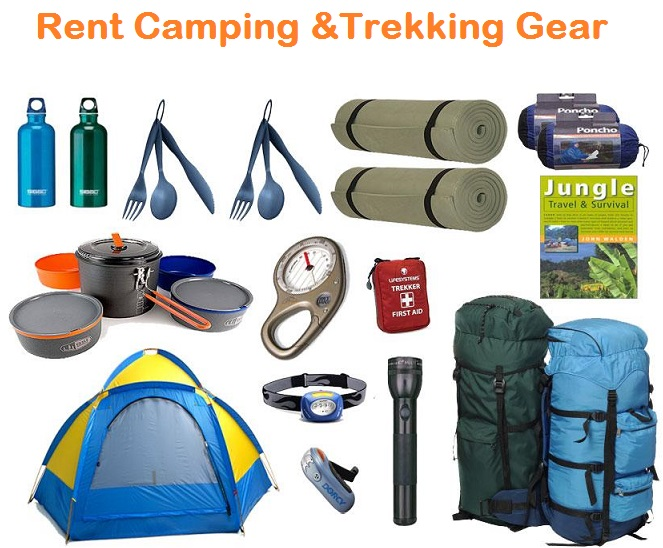
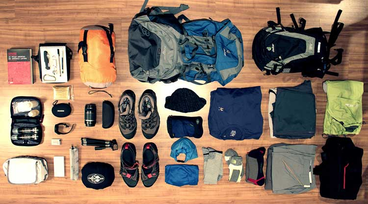

|
|
Ceylon Adventure Sports |
|
|
Ceylon Adventure Sports |
Ceylon Adventure Sports is specializes company in Sri Lanka for nature, adventure and eco-tourism. We are small group of likeminded people with real spirit of adventure and nature tourism in Sri Lanka. Our team highly dedicated and we pride ourselves in organizing memorable tours in this magical island and our goal is to ensure you have a wonderful time in Sri Lanka. Ceylon Adventure Sports team members are passionate about adventure tourism and they have been in the industry many years and with wealth of knowledge about Sri lanka adventure, adventure holidays in Sri Lanka, adventure tours in Sri Lanka, about adventure tourism in Sri Lanka and all possible adventure activities in Sri Lanka..
Ceylon Adventure Sports act as “Trusted Service Provider” to Sri Lankan Travel Companies and one stop shop for all your travel needs. Ceylon Adventure Sports can fully organize your trip to Sri Lanka including accommodation, meals, transportation, attractions and activities. We are applying internationally accepted safety standards, best practices of the industry and ensure the clients safety and we are providing insurance cover all our valuable customers.
Ceylon Adventure Sports company legally accepted company under the Sri Lanka company act and Sri Lankan government given legal permission conduct adventurous activities any part of the country. As part of our CSR programme we are sponsoring two cycling riders for develop their skills and encourage them, others to get involve with cycling as sport.
We are a team of dedicated Adventure Experts and Adventure Based training professionals, driven with the common goal of training cooperate teams to make them versatile, build confidence, enhance leaderships which will enable them to face the challenges of fast moving dynamic cooperate world. For Leisure sector, families and friends, Ceylon Adventure Sports Campsite offers perfect recreation atmosphere to enjoy and relax and a vast range of leisure activities where no one will require experience.
Ceylon Adventure Sports conscious of our social and environmental responsibilities and every effort is taken to negate any negative impact when designing and operating tours in Sri Lanka. We would like our guests to takeaway only pleasant memories of their trip to Sri Lanka, while leaving behind only their footprints in Sri Lanka !
Contributing to the national and corporate development, through personal and team development, by safely sharing the fun of Adventure obtained in beautiful natural surroundings.
Our Mission is to be partners in national and corporate development by – Getting people to participate in Adventure Activities Facilitating to experience the freedom and the beauty of Nature Protecting through conservation projects, the invaluable eco-systems and nature for the next generation Safeguarding our hereditary culture for the future generations Making successful people at Corporate and National levels, through our programmers.
We as Ceylon Adventure Sports years and years of experience with continues improvements and revives have made our team in the top position without any dispute in the element of safety.
We use the best equipment in the industry, purchased from reputed and responsible dealersaround the world.
|  |  |
We live in a wonderful world that is full of beauty, charm and adventure. There is no end to the adventures that we can have if only we seek them with our eyes open. ~ Jawaharlal Nehru


www.ceylonadventuresports.com | (Powered by Samitha,Charith,Sameera)